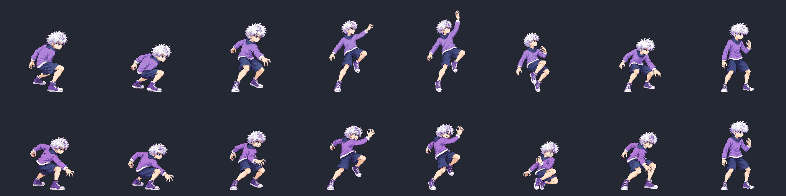
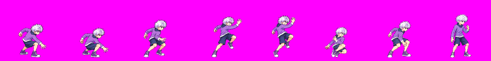

Unapproved candidates. Heavy v05 rebuilds the coil, forward bent-arm rising strike, compact recoil and landing. Final recovery exactly reuses approved idle f0. Charge feet stay within ±1px of the median reference footprint; pairwise extremes can differ 2px.
Raw palette gate remains open (heavy 36,135 colors; charge 157,775 before pack quantization). Skull measurements remain visual estimates under hair. Please review the claw gesture, rising movement and fast shoulder twitch. The active keys remain similar; anticipation hand stays forward and the recovery drops into a pronounced tuck. A +8px recovery offset aligns its pelvis with the preceding pose. Forehead-height follow-through deliberately replaces sky-reaching overhead finish.
Rejected v04
New v05 — original timings
Top: rejected v04. Bottom: new v05. Full eight-frame motion; approved idle ending unchanged.

Row-major: idle f0, heavy f0–f7, charge f0–f3.


